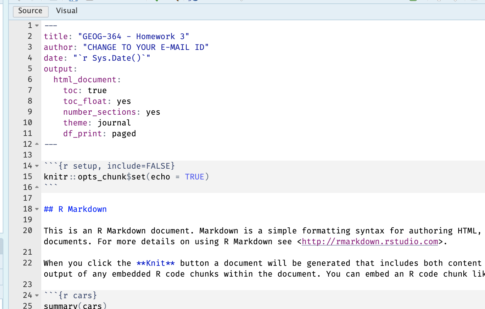

Homework 3
Aim
Welcome to Homework 3. This is worth 15/20 (the other 10 was for the in-class exercises). Overall each lab is worth 4.8% and you can drop your lowest score.
This is due the night before your next lab. The maximum time it should take is about 2-3 hrs of your time, plus lab time.
The aim of this lab is to get comfortable with spatial data and exploratory analysis.
0.1.4 Need help?
REMEMBER THAT EVERY TIME YOU RE-OPEN R-STUDIO YOU NEED TO RE-RUN ALL YOUR CODE CHUNKS. The easiest way to do this is to press the “Run All” button, in the “Run” menu at the top right of your screen
PART 1: LAB SET-UP (Important!)
STEP 1: Create your project for homework 3
[1A] Make a project for Homework 3 (tutorial here) Projects
[1B] Open your Homework3 project in R-Studio (see screenshot below).

Figure 0.7: Yours should look like this but say the name of your homework 3 project
STEP 2: Create your lab report structure & YAML code
[2A] Make a new RMarkdown Report (Tutorial here)
[2B] As we discussed last week, your YAML code at the top of your script tells R how to make the final report. It lives between the — lines. CAREFULLY replace the YAML code with this code (remember to only have one set of —) and press knit.
---
title: "GEOG-364 - Homework 3"
author: "CHANGE TO YOUR E-MAIL ID"
date: "`r Sys.Date()`"
output:
html_document:
toc: true
toc_float: yes
number_sections: yes
theme: journal
df_print: paged
---It should look like this.

Figure 0.8: Remember the —! This is easier in source mode
STEP 3: Change the theme
There are many easy themes you can select to change the look of your report.
[3A] In your YAML code, try changing the theme line to one of these, then press knit to see how it looks (some don’t work in some versions of R). YOU DON’T NEED THE QUOTES.
“bootstrap”, “cerulean”, “cosmo”, “darkly”, “flatly”, “journal”, “lumen”, “paper”, “readable”, “sandstone”, “simplex”, “spacelab”, “united”, “yeti”
Choose a theme of your choice.
STEP 4: NEW (ish) Adjust your knit options
When you press knit when you have packages, a load of library loading text will appear. This makes it hard to find your answers and makes your labs less professional. Although this was addressed in earlier labs, here’s how to fix this issue.
-
[4A] Look at the first code chunk below the YAML code. The
opts_chunk$set()command allows us to set general knit options for the entire report.
knitr::opts_chunk$set(echo = TRUE)- Add in two more options, warning=FALSE and message=FALSE.
knitr::opts_chunk$set(echo = TRUE, warning=FALSE, message=FALSE)- When you press knit for now, nothing should happen (but no errors. )
STEP 5: Tidy up
- [5A] Delete all “the friendly welcome text”, below the knitr::opts_chunk so you have a nice clean report:

STEP 6: Finally.. sort out libraries
It’s good practice to have a single code chunk near the top of the script containing all your library commands. This is to stop duplicated code and to make it easy to see what you are loading before running your labs.
- [6A] Add a new code chunk under the opts one, and add the code inside it to load the packages.
library(tidyverse) # Lots of data processing commands
library(knitr) # Helps make pretty output files
library(ggplot2) # Output plots
library(skimr) # Summary statistics
library(sf) # Spatial commands
library(tmap) # Mapping commands
library(plotly) # Interactive plots
library(readxl) # Read from excel files-
[6A] Then press save or try to knit. If any packages are missing you will see
- EITHER a little yellow bar at the top of the screen asking if you want to install the libraries. Say yes, wait until the libraries are installed and try again.
- OR an error saying that it can’t find that library (it might also be a spelling mistake if you are sure it’s installed). In this case, you have to go to the app store and download it (Packages/Install).
- EITHER a little yellow bar at the top of the screen asking if you want to install the libraries. Say yes, wait until the libraries are installed and try again.
PART 2: IN-CLASS WORK
You are allowed and encouraged to work in groups for this section
STEP 8: Reading in data
In lab 1, we used data that was built into R. This week we will read in data from files.
[8A] Go to the canvas assignment page. Download all the datasets for the lab AND PUT THEM IN THE HOMEWORK 3 PROJECT FOLDER ON YOUR COMPUTER.
[8B] In the TEXT part of the report, below the library code chunk, make a new heading 1, text header called “In-Class work”.
[8C] Below that, make a new code chunk. Use the read_excel() command to load the “Lab03_house.xlsx” data into your report and assign it it to a variable called House (Tutorial 4 - Read Excel).
STEP 9: Understand where the data has come from
IMPORTANT. Imagine that next month, your friend is moving to Sindian Dist., in New Taipei City, Taiwan. They want to buy a house and have asked you to figure out what most impacts house price.
YOU ARE WRITING THIS REPORT FOR THEM!
[9A] You have been given a specific dataset to help answer your friend’s question. Read more about the data here:https://archive.ics.uci.edu/ml/datasets/Real+estate+valuation+data+set.
[9B] In your report, describe the data, including the object of analysis, population and variables. Now critique it! What aspects of this data are useful for your friend or not useful.
More to come.
WHAT TO SUBMIT
If you are using your own computer
Press knit one final time. You will have created two files; a .Rmd file containing your code and a .html file for viewing your finished document.
Find the html and RmD files in your Lab 1 folder on your computer. Double click the html file to open it in your browser and check it’s the one you want to submit.
You need to submit BOTH of these files on the relevant Canvas assignment page.
You can also add comments to your submission as needed on the canvas page, or you can message Dr G.

Figure 0.5: Find them in your GEOG364 folder on your computer
If you are using Posit Cloud online
Press knit one final time. You will have created two files; a
.Rmdfile containing your code and a.htmlfile for viewing your finished document.Go to the files tab an click on the little check-box by the RmD file. Then click the blue “more button” and press export. Save onto your computer.

Figure 0.6: How do download the files from PositCloud
- Uncheck the .RmD box and click the box by the html file. Then click the blue “more button” and press export. Save onto your computer.
You need to submit BOTH of these files on the relevant Canvas assignment page.
You can also add comments to your submission as needed on the canvas page, or you can message Dr G.
CHECK YOUR GRADE!
RUBRIC
This is how you will be graded (plus any in-class components)
15/15: Exceptional! Hard to get! You understood the nuance of all the questions and have a very clear understanding of the concepts. Your lab book report is easy to read and its easy to find the answers.
14/15: Thoughtful, accurate, and shows a clear understanding of the concepts, with only very minor errors or omissions.Your lab book report is easy to read and its easy to find the answers.
12/15: Mostly accurate and shows a good understanding, but with some errors, omissions, or weaker explanations
9/15: Shows some understanding, but several answers are incorrect, incomplete, or unclear
5/15: Any attempt! A single word or a canvas comment to say hi will get you 5 points even if you haven’t attended lab, because I want to know people who are simply dropping a lab compared to people who are really struggling.
Overall, here is what your lab should correspond to:
| POINTS | Approx grade | What it means |
|---|---|---|
| 98-100 | A* | Exceptional. Above and beyond. THIS IS HARD TO GET. |
| 93-98 | A | Everything asked for with high quality. Class example |
| 85-93 | B+/A- | Solid work but the odd mistake or missing answer in either the code or interpretation |
| 70-85 | B-/B | Starting to miss entire/questions sections, or multiple larger mistakes. Still a solid attempt. |
| 60-70 | C/C+ | It’s clear you tried and learned something. Just attending labs will get you this much as we can help you get to this stage |
| 40-60 | D | You submit a single word AND have reached out to Dr G or Aish for help before the deadline (make sure to comment you did this so we can check) |
| 30-40 | F | You submit a single word……. ANYTHING.. Think, that’s 30-40 marks towards your total…. |
| 0+ | F | Didn’t submit, or incredibly limited attempt. |